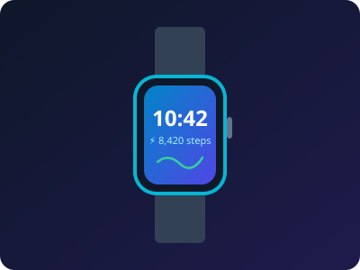

Requirement 2 • AppTo-Do Productivity App (localStorage)
A responsive task management application featuring client-side persistence with localStorage, full CRUD actions, task completion toggles, priority levels, and dynamic statistics.
Permanent data persistence with
localStorage
Task filters: All, Active, Completed + Live Search
Edit modal, priority tags & task completion analytics